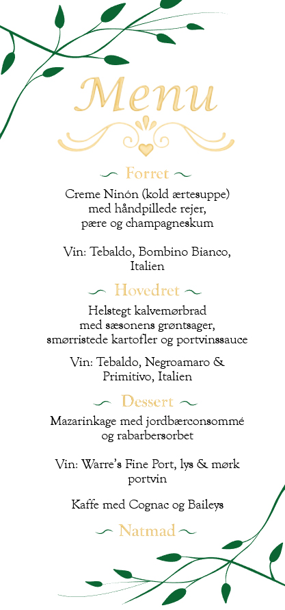
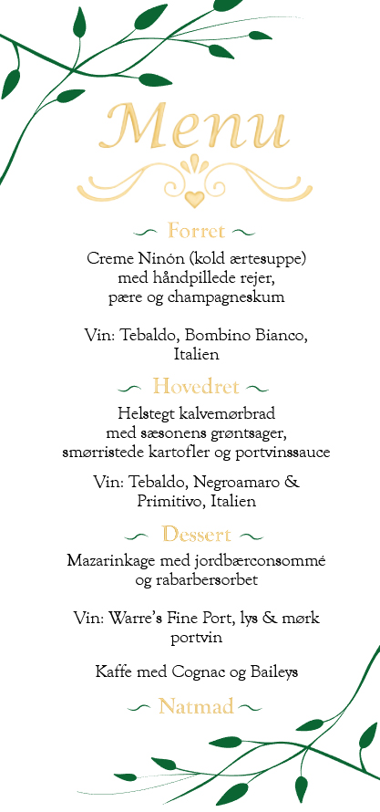
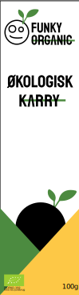
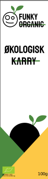

Da min mormor og morfar skulle holde guldbryllup blev jeg spurgt om jeg ikke ville lave menukortene. Det sagde jeg selvfølgelig ja til. Efter vi havde snakket sammen om designet, kom vi sammen frem til at der skulle være grønne blade, en guldfarvet krummelure og guldfarvede mellemrubrikker. Efter jeg havde tegnet nogle skitser i hånden og fået designet godkendt tog jeg et billede af min skitse og brugte den som skabelon i Illustrator.Med skitsen i baggrunden brugte jeg pen tool til at optegne krummeluren og bladene. Efter tog jeg så krummeluren ind i Photoshop og begyndte at ligge skygger og highlight, med brush tool så den fik en mere metallisk/guld effekt. Der efter expandede jeg den aftalte font og gjorde det samme som jeg havde gjort med krummeluren.
Med skitsen i baggrunden brugte jeg pen tool til at optegne krummeluren og bladene. Efter tog jeg så krummeluren ind i Photoshop og begyndte at ligge skygger og highlight, med brush tool så den fik en mere metallisk/guld effekt. Der efter expandede jeg den aftalte font og gjorde det samme som jeg havde gjort med krummeluren.

 

Her fik vi til opgave at designe 3 forskellige slags emballage. Jeg endte med at mit 3. produkt skulle være en karry pakke. Jeg ville gerne have at pakken fremstod simple, modrene og naturlig.
For at holde det simplet men stadig i øjenfaldende valgte jeg at have en hvid baggrund og indsætte gule og grønne trekanter som er placeret så det ligner bjerge og så når man ser den fra siden af for man næsten en 3D effekt af bjergene. På forsiden har jeg placeret et hul/vindue så man kan se produktet vinduet er sat sådan så det ligner en sol op/nedgang mens der samtidig er noget logogenkendelse med den grønne stilk. Jeg har også valgt at bruge logogenkendelse i rubrikken (økologisk karry) med den grønne bjælke gennem det nederste tekst for at give det hele en rød tråd (eller grøn i dette tilfælde).

Vil i se mere så tjek min Instagram!
Eller kontakt mig her:
Email: frejazoffmann@gmail.com
Tlf.: 25732646